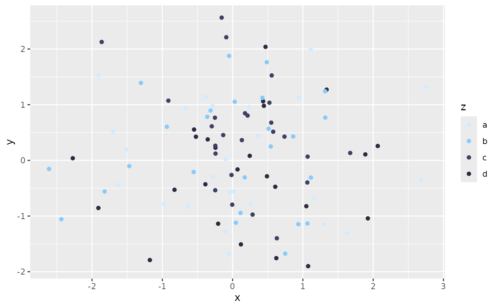
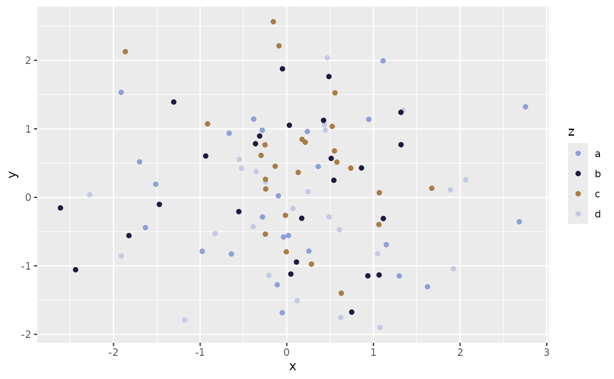

ggplot2 fill and color scales derived from Bluey characters
scale_color_bluey()andscale_fill_bluey()provide discrete fill functionsscale_color_bluey_c()andscale_fill_bluey_c()provide continuous fill functions`
Usage
scale_color_bluey(option = "bluey", direction = 1, ...)
scale_fill_bluey(option = "bluey", direction = 1, ...)
scale_color_bluey_c(option = "bluey", direction = 1, ...)
scale_fill_bluey_c(option = "bluey", direction = 1, ...)Arguments
- option
The name of the color palette to use. See
bluey_palettefor available options- direction
If greater than or equal to 0, it will return the standard direction; otherwise it will reverse the direction of the palette
- ...
Additional arguments passed to ggplot2 scale functions
Examples
library(ggplot2)
tmp <- data.frame(x = rnorm(100), y = rnorm(100), z = rep(c("a", "b", "c", "d"), 25))
# using a discrete scale
ggplot(tmp, aes(x, y, color = z)) +
geom_point() +
scale_color_bluey()

# changing the palette used when creating a discrete scale
ggplot(tmp, aes(x, y, color = z)) +
geom_point() +
scale_color_bluey(option = "socks")
